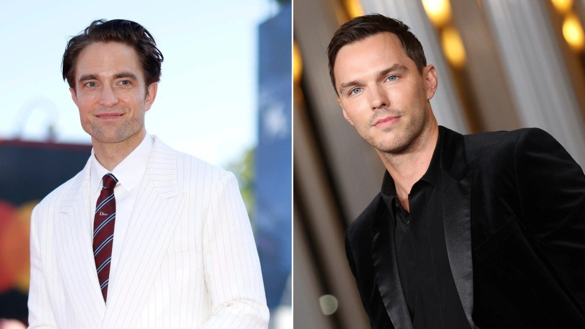
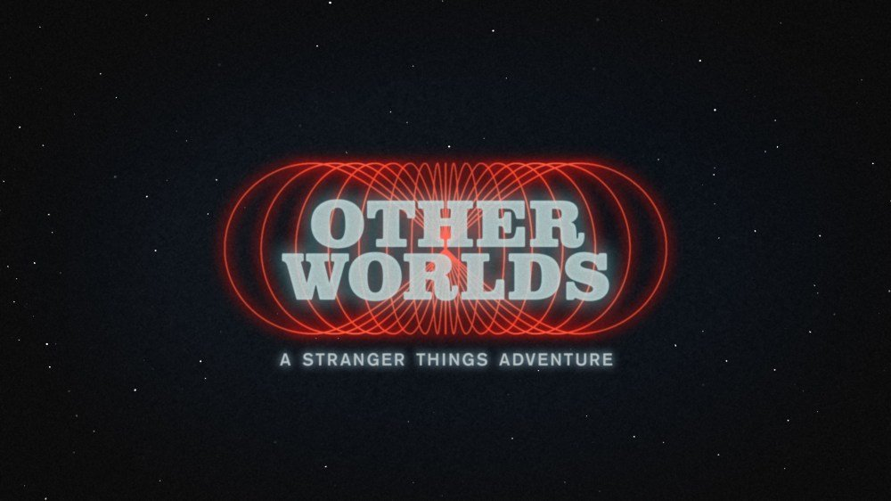
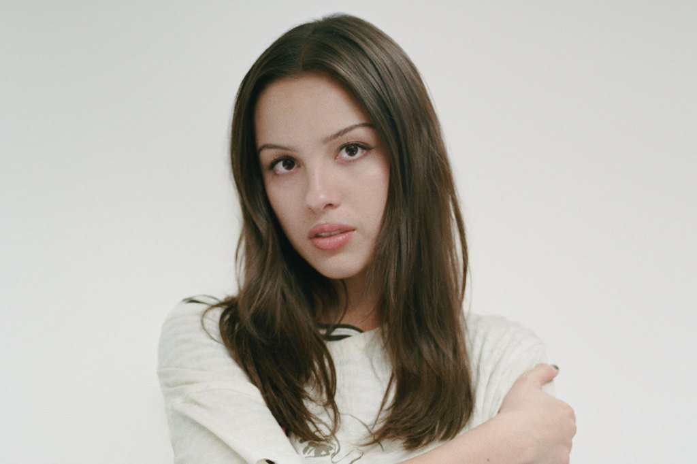

Robert Pattinson and Nicholas Hoult screen-tested to be the next James Bond

The 007 search got a jolt over the weekend: Deadline, Variety and The Hollywood Reporter all report that Pattinson and Hoult quietly screen-tested for director Denis Villeneuve in late October, joining the reported finalists Callum Turner, Josh O’Connor and Jack Lowden. THR says the tests happened the weekend of Oct. 24, and the conventional wisdom that Amazon MGM wanted a lesser-known actor suddenly looks shaky.
Pattinson just worked with Villeneuve on Dune: Part Three (out Dec. 18), and Hoult was famously the runner-up to Pattinson for Batman. Variety adds that Harry Styles had discussions about the part. Amazon isn’t commenting, and Deadline’s sources expect a decision by the end of the month, possibly before Thanksgiving. There’s no trailer, since the film isn’t cast or shot yet, so the links below go to the reporting.
Russell Brand learns his sentence today; prosecutors ask for 10 to 15 years
At Southwark Crown Court this morning, the prosecution asked for a top-category sentence of 10 to 15 years for Brand’s rape conviction, plus one to four years for each of three sexual assaults. Three victim impact statements were read, one in person by a woman who said she had carried an “undeserved feeling of shame” for 20 years.
Brand’s lawyer called the offenses “isolated incidents” from 17 years ago and asked for mercy, citing his young family. Judge Bennathan adjourned and will deliver a televised sentence at 2 p.m. London time, which is 8 a.m. Chicago time, so the outcome may be out by the time you read this.
Netflix orders Other Worlds, a 1950s Stranger Things prequel

Netflix made it official on Stranger Things Day: Other Worlds: A Stranger Things Adventure is a live-action prequel set in 1955 Marion, Nevada, before both the original series and the stage play The First Shadow. It will trace what led to young Henry Creel’s exposure to the substance that turned him into Vecna, with an all-new cast, and it premieres in 2028.
Writer Kate Trefry (who wrote The First Shadow) is showrunner and co-creator with the Duffer brothers, Joe Wright directs the first three episodes, and it shoots in New Mexico. A 41-second teaser is up on Netflix; there’s no YouTube upload yet.
Olivia Rodrigo returns to No. 1 as Thriller climbs to No. 2, its best rank since 1984

you seem pretty sad for a girl so in love rises 2-1 on the Billboard 200 for its fourth nonconsecutive week on top, with 57,000 units. That’s the smallest total for a No. 1 album in more than a year, but the record has never left the top five in 21 weeks.
The bigger story is right behind it: Halloween streaming sent Michael Jackson’s Thriller from 13 to 2, its highest rank since spring 1984. ILLIT’s BREAK EVEN (No. 6), BigXthaPlug’s Better Over Time (No. 7) and Queens of the Stone Age’s Perfecth (No. 10) debut in the top 10.
Bottom of the news
- Final weekend numbers: Godzilla Minus Zero opened to $31.6M, and The Cat in the Hat beat projections with $20.5M.
- Taylor Swift and Karlie Kloss sat together at Sunday’s Chiefs–Jets game, and fans read it as the end of their long-rumored feud.
- Netflix renews Nobody Wants This for Season 4, less than a month after Season 3 premiered.
- Druski’s SNL ended with one of the show’s most star-packed goodnights, including Michael B. Jordan, Austin Butler, Dave Chappelle and Chris Rock.
- Maya Hawke will lead Legendary’s live-action Magic: The Gathering movie.
- Margaret Cho made her Broadway debut as the Narrator in The Rocky Horror Show, which has extended through May 2027.